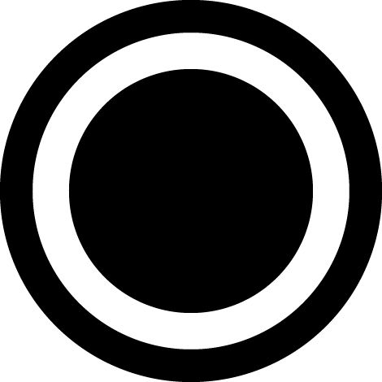
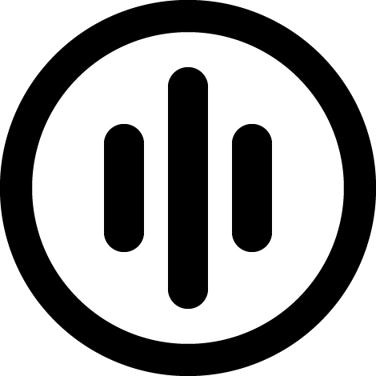
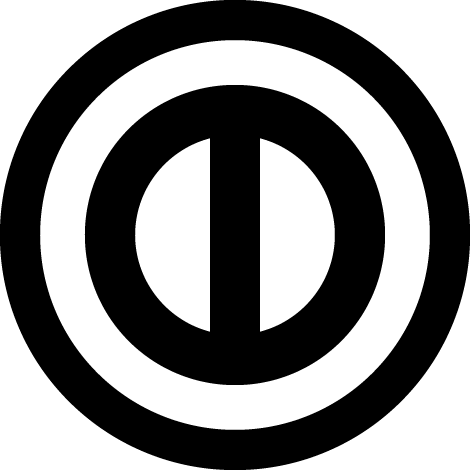

Game modes in Osu!:
Osu! currently has four different game modes available to the community.
- Osu! standard :
Osu! standard elements include hit circles, sliders, and spinners. Hit circles, also known as notes, are a common object on nearly every beatmap. When a hit circle appears, a ring, called the approach circle, will appear around it and begin to shrink. In order to score points from a hit circle, players must place their cursor over the circle and click the hit button as the approach circle closes and disappears under the hit circle. Sliders appear as two hit circles with a solid path, called a slider track, between them. As with hit circles, an approach circle appears at the beginning of a slider track, which must be clicked when the approach circle touches its edge. Unlike hit circles, however, after the start of a slider has been hit, a ball, called the slider ball, will begin to roll along the slider track, and players must continue to hold down the hit button and keep their cursor hovered over or near the slider ball until it has reached the end of the slider. Sometimes a slider end will have an arrow, called the reverse arrow, which means the player will be required to follow the slider ball back to its starting point.
- Osu! mania :
Osu! mania is a mode similar to piano tiles where players need to press keys bound to several columns according to the music. As the music plays, notes are falling from the top of the screen in several columns whose number depends on the map. As a note reaches the bottom row of some column, the player is expected to press the key bound to that column to clear the note, similar to playing guitar or bass in Rock Band or Guitar Hero.
- Osu! taiko :
The Taiko mode involves hitting drums to the beat of a music piece. Taiko mode does not require the use of the cursor except for browsing the beatmap list and the pause menu; it only requires clicking which can be done with either a keyboard or a mouse. When playing the Taiko mode, red and blue beats, as well as long yellow drumrolls (with an appearance similar to a slider) will scroll across the screen – the player gets more points for the more hits they can achieve.
- Osu! catch the beat :
Catch the Beat puts the player in control of a character (named Yuzu) holding a plate above their head, with the objective of catching fruits falling from the top of the screen. Regular beats on a map are converted simply to fruit falling straight down. Sliders have one fruit at each end of the slider and a trail of juice drops leading between the ends. Large juice drops are the equivalent of hit circles, while small drops add extra points to the score and affect accuracy. Spinners become fruit falling en masse from the top of the screen; the player does not need to catch all of the fruit, although catching more fruit will earn them more points.